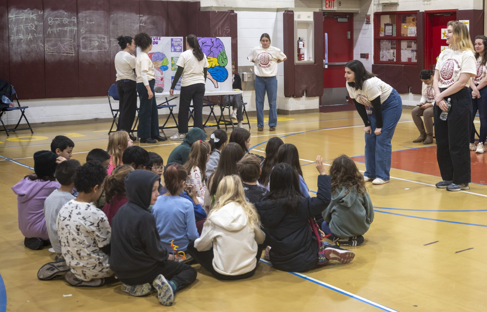
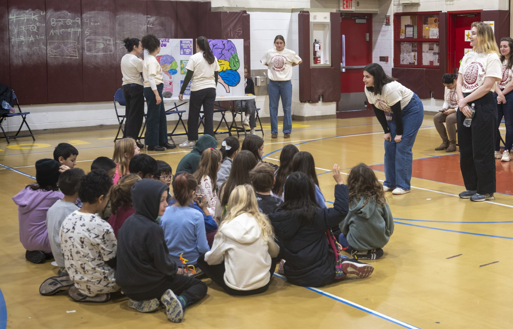

About Me

I study how brain dynamics emerge across development, what dysfunctions in these dynamics reflect risk of psychopathology, and how these processes are modified by sex and gender.
Neuroscience PhD Student | Researcher
I study how brain dynamics emerge across development, what dysfunctions in these dynamics reflect risk of psychopathology, and how these processes are modified by sex and gender.
I help organize the Machine Learning in Medicine (MLiM) virtual webinar series, in which we host experts on AI applications in healthcare.
I co-organized Brain Awareness Day in December 2024, an education outreach event bringing neuroscience to local 4th-grade students.
 

Email: lss4002@med.cornell.edu
GitHub: louisaschill
LinkedIn: Louisa Schilling